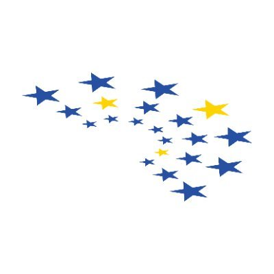

Hey there!
You have just stumbled upon my personal website.
Welcome!
There are snacks in the back.
I am Odysseus Abraham Kirikopoulos, a high school student from Epanomi, Greece.
I am involved in a few projects and non-profits,
like Simplified Coding, HackOlympia, and the European Youth Parliament.
If you want, take a look to get to know more about me.
If you just want to get in touch with me,
this link with some HTML magic will get you there right away.
Education
General Lyceum of Epanomi
High School Diploma | Economics & Computer Science
September 2023—May 2026 (expected)
Grade (1st Term, 10th Grade): 17.4/20
Currently enrolled in the 10th Grade General Studies curriculum
set by the Ministry of Education at the 1st General Lyceum of Epanomi.
Actively involved as a Co-Leader of the independently organized Computer Science Club, HackOlympia,
fostering a passion for technology and coding among peers.
Gymnasium of Epanomi
Middle School Diploma | General Studies
September 2020 - June 2023
Grade 18.7/20
Graduated with a middle school diploma from the Gymnasium of Epanomi, completing the General Studies curriculum.
Actively participated as a member of the school-led Educational Robotics & STEM society.
Projects
Core Contributor
Simplified Coding
September 2022 - Present
Co-founded Simplified Coding,
a website that offers coding lessons for completely free, with no ads in Greek.
I developed the first version of the website and created the first lessons.
I am currently working on the design of the website and developing more quality courses.
Co-Leader
HackOlympia
July 2023 - Present
Co-leader at HackOlympia, a national wide Computer Science club,
backed by Hack Club.
I am responsible for organizing weekly meetings and creating and delivering lessons.
Computer Science Tutor
Schoolhouse
April 2023—Present
As a Computer Science Tutor at Schoolhouse, I guide students in Python and Web Development.
I've worked with students from multiple countries, hosting more than ten sessions sessions,
and dedicating over 24 hours of volunteering,
with over 20 positive reviews from students.

Member
European Youth Parliament Greece
December 2022 - Present
As a member of the European Youth Parliament Greece,
I have participated as a delegate in the 46th National Selection Conference,
engaging in debates and discussions on current European issues.
I will also be part of the Greek delegation to the 24th National Conference
of the European Youth Parliament the Netherlands.
Cap-O-Meter
Gymnasium of Epanomi
November 2022 - June 2023
Developed Cap-O-Meter in the Educational Robotics & STEM society at the Gymnasium of Epanomi.
This project aimed to assist schools and institutions in tracking the collection of plastic bottle caps
to support initiatives providing wheelchairs for students in need.
I was responsible for developing the software of the Arduino device,
as well as presenting the project to multiple conferences.
Awards and Participations
Municipality Honors
Honors for performance in Educational Robotics & STEM society
April 2024
46th National Selection Conference of the European Youth Parliament Greece
Selected Delegate
December 2023
Greek Code Week Hackathon 2023
3rd Place
October 2023
15th Student Conference of Informatics
Participant
April 2023
8th Student Robotics Festival
1st Technological Excellence Award
December 2022
Wanna get in touch?
Have something exciting to share?
Want to chat?
Feel free to reach out :)
(If you want to spam my inbox, don't bother, my mail provider is doing a great job filtering it out!)